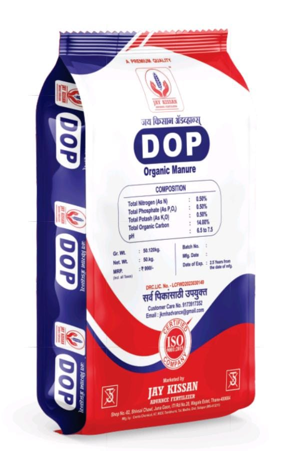
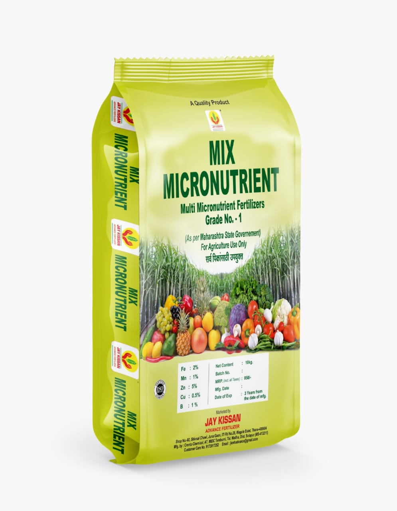
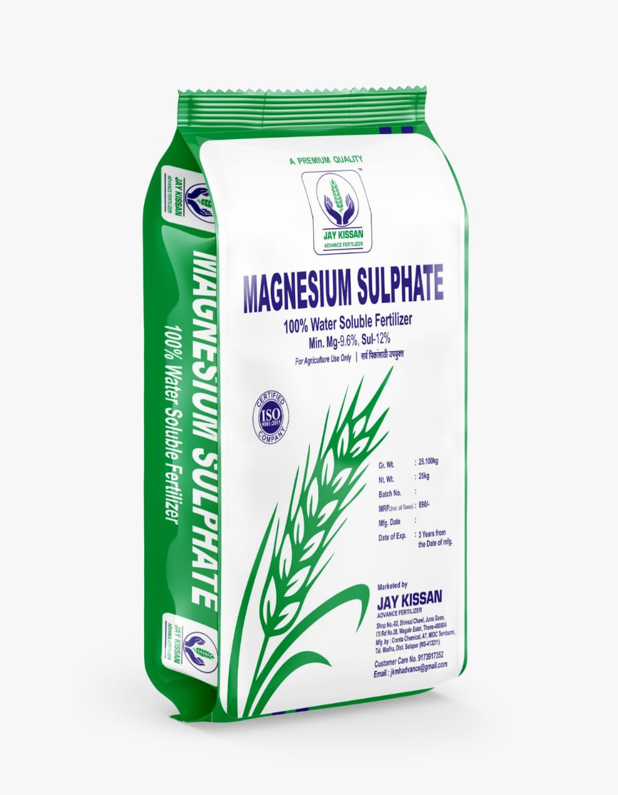
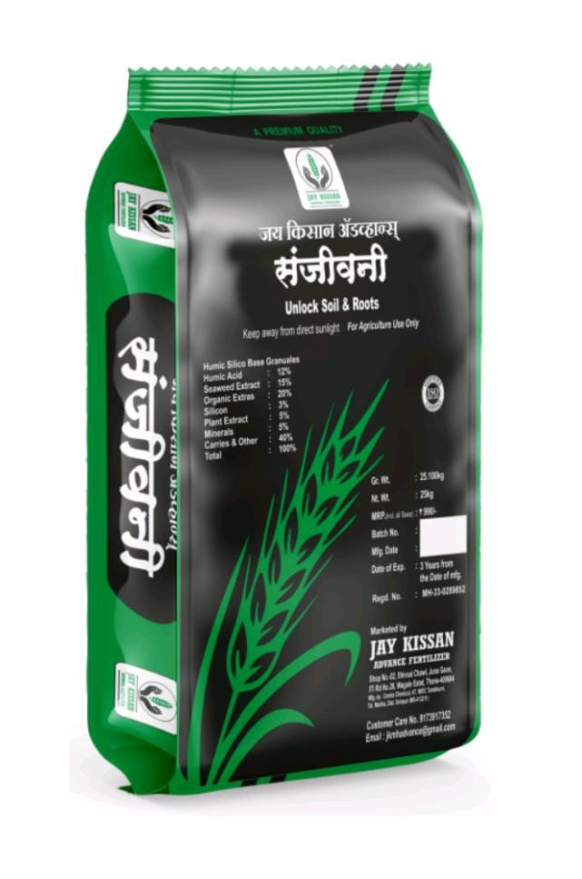

Your Growth, Our Passion!
दर्जा हीच आमची ओळख...

Jay Kissan Sugarcane, Onion, Maize Special
- Benifits
- Sugarcane, Onion, Maize Special Fertilizer
- It is in granular form and is completely organic.
- The application of this fertilizer increases the number of plant roots resulting in increased uptake of the given fertilizer.
- In sugarcane crop the distance between two plants increases and the number of tillers increases.
- In the onion crop, the leaves grow vigorously and the root grows, so the size of the onion increases rapidly.
- In maize crop, the distance between two seeds increases.
- Root development is rapid and greenness and height increase.
- Quantity
- 100 kg per acre
- Available packing
- 50 kg

Jay Kissan Advance DOP
Organic Manure
- Advantages : Jai Kisan Advance DOP Fertilizer
- It is in granular form and is completely organic.
- The use of this fertilizer helps to increase the number of bacteria and also helps in improving the soil texture.
- This fertilizer contains 0.50% Nitrogen, 0.50% Phosphorus, 0.50% Potash. Organic carbon is at least 14%.
- This fertilizer increases the productivity of the land.
- Quantity
- 100 kg per acre
- Available packing
- 50 kg

P.D.M Potash
Government Approved Granular Fertilizer
- Advantages
- Granular form
- Government approved
- Contains 14.50% water-soluble potash
- Improves size, weight, and swelling of crops
- Rate
- Perennial Crops: 100 kg per acre
- Other Crops: 50 kg per acre
- Suitable for all crops
- Available Packing
- 50 kg

Jai Kisan Advance Annapurna
Phosphate Rich Organic Manure
- Benefits
- Granular form and organic with phosphorus
- Compensates phosphorus deficiency in soil
- Contains 10.40% phosphorus pentoxide (P2O5) with 0.40% nitrogen
- Minimum carb-nitrogen ratio of 7:9
- No adverse effects
- Completely organic
- Suitable for maize, sugarcane, sorghum, wheat, millet, banana, grass, etc.
- Quantity
- 100 kg per acre
- Available Packing
- 50 kg

Jai Kisan Advance Super Silicon
Diatomite Amorphous Silica
- Advantages
- Government of Maharashtra approved
- Increases food storage by enhancing photosynthetic activity
- Reduces absorption of chemical sprays
- Enhances uptake of other fertilizers
- Reduces severity of fungal and bacterial diseases
- Quantity
- Perennial Crops: 100 kg per acre
- Other Crops: 50 kg per acre
- Suitable for all crops
- Available Packing
- 50 kg

Calcium Sulfate (Phospho Gypsum)
- Advantages
- High calcium content (70%)
- High sulfur content (13%)
- Improves soil texture and reduces soil acidity
- Increases nutrient availability
- Boosts yield in oil crops and calcium-rich crops
- Quantity
- Fine soil: 3-4 bags
- Coarse soil: 6-7 bags
- Available Packing
- 50 kg

Ammonium Sulfate
Fertilizer Grade N-20.16, S-23%
- Advantages
- Contains 20.5% nitrogen in ammonium form
- Contains 23% sulfur
- Reduces alkalinity in soil
- Increases photosynthesis and plant growth
- Rate
- 80-100 kg per acre
- Available Packing
- 40 kg

Planto Double Power™
Biological Extract Organic Product
- Advantages
- Technologically manufactured, granular form
- Contains bioplantozyme and bionim extract
- Accelerates plant growth, branching, flowering, and fruiting
- Promotes natural growth and increased productivity
- Rapid plant growth
- Rate
- 25 kg per acre
- Available Packing
- 25 kg

Neem Powder
Organic Neem Powder
- Benefits
- High-quality, pure form
- Inhibits soil fungi and insects
- Maintains good soil health and promotes humus formation
- Contains natural nitrogen, phosphorus, and potassium
- Quantity
- 100 kg per acre
- Available Packing
- 40 kg

Multi Micronutrient Fertilizers Grade No. 1
- Advantages
- Maharashtra government certified
- Contains Zinc-5%, Ferrous 2%, Manganese-1%, Boron-1%, Copper-0.5%
- Provides essential micronutrients for plant growth
- Improves crop growth and increases yield
- Ratio
- Vegetables: 10 kg per acre
- Fruits: 20 kg per acre
- Available Packing
- 10 kg

- Magnesium sulfate
- Advantages
- This fertilizer is in crystal form and contains 9.6% magnesium and 12% sulfur.
- Application of this fertilizer increases the amount of chlorophyll in crops.
- Application of magnesium sulphate increases photosynthesis activity rapidly.
- The use of this fertilizer removes magnesium and sulfur deficiency of crops.
- Quantity
- 25 kg per acre
- Available packing
- 25 kg

Ferrous Sulfate
- Advantages
- Contains 19% iron and 10.5% sulfur
- Corrects iron deficiency (chlorosis)
- Promotes chlorophyll production and greening of leaves
- Beneficial for iron-sensitive crops like ginger, sugarcane, kale, fruits, and leafy vegetables
- Quantity
- 10 kg per acre
- Available Packing
- 10 kg

Jai Kisan Advance Sanjeevani
- Advantages
- Granular form
- Modern product
- Accelerates root growth and food intake
- Promotes rapid growth of stunted plants
- Contains humic acid, fulvic acid, marine plants, and silicon
- Enhances photosynthesis and plant immunity
- Quantity
- 25 kg per acre
- Available Packing
- 25 kg

Zinc Sulphate
Agricultural Grade Zn-21%, S-10%
- Benefits
- Corrects zinc and sulfur deficiencies
- Promotes pollen development
- Prevents stunted growth, delayed maturity, and yellowing of leaves
- Beneficial for zinc-sensitive crops like maize, rice, cotton, wheat, and leafy vegetables
- Quantity
- 10 kg per acre
- Available Packing
- 10 kg

J.K. Ultra Power (Calcium Nitrate)
- Advantages
- 100% water-soluble
- Contains 18.8% calcium and 15.5% nitrate
- Provides soluble calcium
- Corrects calcium deficiency and promotes crop growth
- For Fertigation
- Grape, Pomegranate, Banana, Cotton, Tomato, Onion, Sugarcane, Ginger, Turmeric, Kalingad, Floriculture, Protected Agriculture
- Rate
- 10-15 kg per acre (drip)
- Available Packing
- 10 kg

Jai Kisan Advance Power
- Benefits
- Increases white radish growth
- Enhances nutrient uptake efficiency
- Promotes leaf size and dark green color
- Accelerates photosynthesis and increases yield
- Boosts plant immunity
- Improves fruit size, weight, luster, and taste
- Enhances nutrient absorption and transport
- Reduces flower and fruit drop
- Quantity
- 10 kg per acre
- Available Packing
- 10 kg

Jai Kisan Advance King Maker
- Benefits
- Contains Oil of Myrbane for effective plant budding
- Increases number of buds, flowers, and fruits
- Improves fruit setting and reduces bloating
- Promotes sugarcane stalk thickness and splitting
- Enhances white radish growth and yield
- Increases cotton boll size and leaf number
- Boosts bud formation in tomatoes, pomegranates, chilies, watermelons, brinjals, soybeans, etc.
- Promotes root growth in onions and garlic, improving nutrient uptake
- Available Packing
- 250 ml, 500 ml, 1 liter

- Jai Kisan Advance Magic Gold 70
- Advantages
- Organic carbon is high quality in liquid form and is an important element for soil and crops.
- Organic carbon is important for all crops and at all stages.
- Organic fertilizers act differently at different stages in the plant.
- Organic compost increases soil fertility by making the soil humus.
- White radish grows rapidly.
- As organic carb is a food for bacteria, uptake increases rapidly and hence plant growth is accelerated.
- Organic carbon contributes to the C:N ratio for flowering in all plants, thereby increasing the number of female flowers by impregnating the crop.
- Increase in soil fertility due to organic carbohydrates increases plant resistance and improves photosynthetic activity.
- The crop is not prone to disease.
- This results in overall growth of the plant.
- Quantity
- 5 liters per acre
- Available packing
- 5 liters

- Jai Kisan Advance - Kingmaker
- Advantages
- Kingmaker is a product containing oil of miraben and additional ingredients are protein, carboxylic acid, amino acid, fulvic acid, seaweed extract, humic acid, vitamin, adhitoda vasica, enriched carbon.
- This product acts differently at different stages of plant growth.
- Its use increases the quantity of flowers, fruits, and increases budding in crops like sugarcane.
- Trace in crop is reduced, when given through drip, white radish grows, resulting in better plant uptake, hence crop yield.
- There is overall growth.
- Dosage
- 2 to 2.5 ml per liter of water
- By drip
- 1 to 2 litres
- Available packing
- 250 ml, 500 ml, 1 liter

- Jai Kisan Advance - CropGuard
- Advantages
- This product contains ingredients like silicon, nitro reagent, zinc, natural plant extracts etc.
- Jai Kisan Advance CROP GUARD This product helps in reducing the trace on plants.
- Application of Jai Kisan Advance CROP GUARD product helps in restarting stunted plant growth, and instills resistance in the crop to fight adverse environmental conditions.
- The use of Jai Kisan Advance CROP GUARD increases the width and thickness of the leaves of the plant so that the crop does not succumb to pests early.
- Jai Kisan Advance CROP GUARD This product is compatible with most herbicides and enhances the efficacy of herbicides, and does not harm the main crop as it does not stop the growth of the main crop but kills the weeds.
- Dosage
- 1.5 to 2 ml per litre
- Available packing
- 100 ml, 250 ml, 500 ml

- Jai Kisan Advance - Crop-N Stick (Sticker)
- Advantages
- Cop N Stick is a high quality sticker, spreader, penetrator, pH balancer.
- The Cop N Stick helps spread the sprayed drug over the leaf, increasing the effectiveness of the drug.
- Cop N Stick helps reduce plant stress due to its silicon content and increases the effectiveness of insecticides, fungicides, fungicides, and saves on medication.
- And costs less.
- Dosage
- 0.3 to 0.5 ml per liter of water
- Available packing
- 50 ml, 100 ml

- Jai Kisan Advance - Jhyam Crop Power
- Advantages
- The use of high quality seaweed in the product Zyme Cop Power reduces plant footprint and accelerates plant growth.
- Instant greenness increases i.e. increased light radiation helps overall growth of the plant.
- Due to the high quality seaweed, the quantity of fruits and flowers also increases.
- White radish grows rapidly if fed through drip.
- Usage rate
- 2 ml per liter of water
- From drip
- 1 to 2 liters per acre
- Available packing
- 100 ml, 250 ml, 500 ml, 1 liter

- Jai Kisan Advance - Micromix D F
- Advantages
- Mycomics DF is a product rich in Zinc, Ferrous, Manganese, Copper, Boron.
- This product is useful to compensate the micronutrient deficiency of the plant.
- Because of its use, it improves plant nutrition and is used for all crops.
- Application rate
- 2 to 3 liters per acre (according to crop and crop condition)
- Available Packing
- 5 Litres

- Jai Kisan Advance Kingmaker (DRIP)
- Advantages
- Kingmaker is a product containing oil of miraben and it contains protein, cabyxylic acid, amino acid, fulvic acid, seaweed extract, humic acid, vitamin, adhitoda vasica, enriched carbon as ingredients.
- This product acts differently at different stages of plant growth.
- Its use increases the quantity of flowers, fruits, and increases budding in crops like sugarcane.
- Trace in crop is reduced, when given through drip, white root increases resulting in better plant uptake of nutrients thus overall growth of crop.
- Available packing
- 5 litres